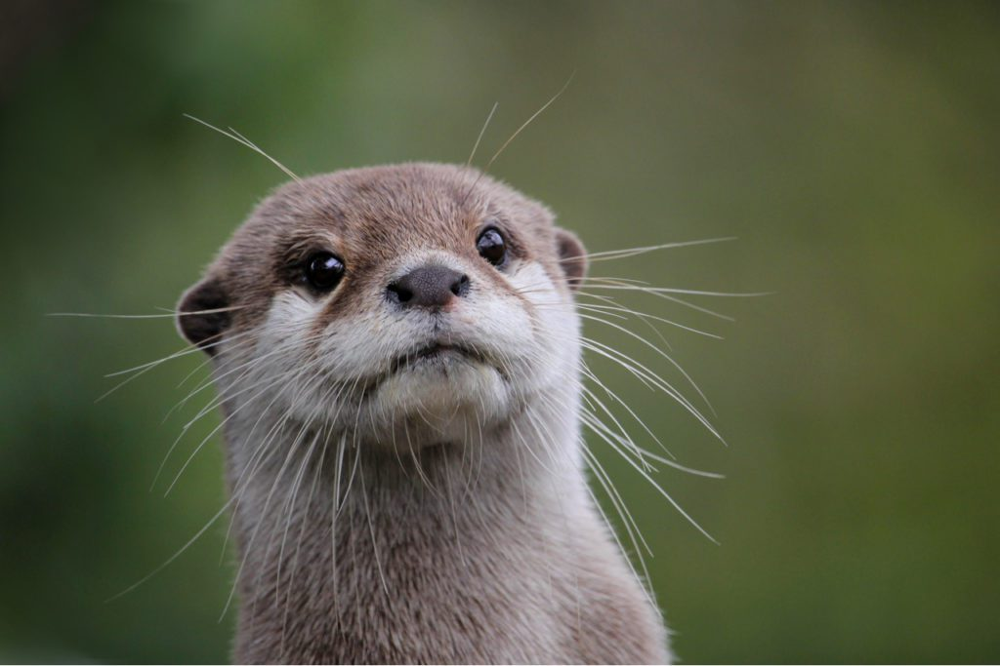
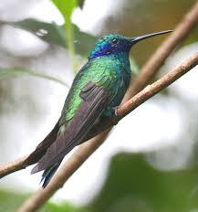
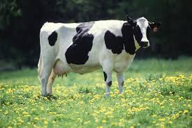
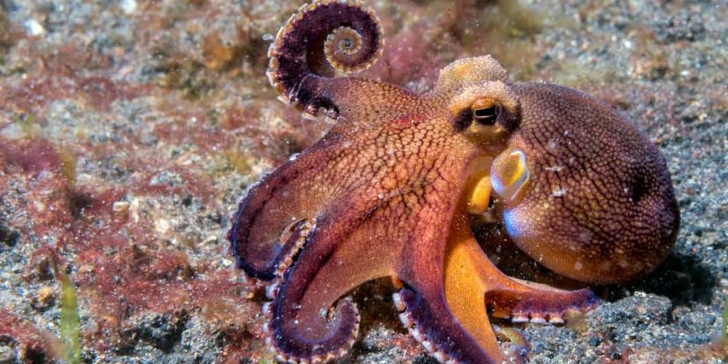

Curiosidades Interesantes
¡Bienvenido! Aquí encontrarás más datos curiosos 4!!.
Los pingüinos tienen una glándula que les permite filtrar la sal del agua marina.

Las nutrias marinas se toman de las manos para no separarse mientras duermen.
El colibrí es el único pájaro que puede volar hacia atrás.
Las vacas tienen mejores amigas y se estresan cuando están separadas.
Los pulpos pueden cambiar de color y textura para camuflarse.
Las ranas pueden congelarse y luego volver a la vida cuando se descongelan.